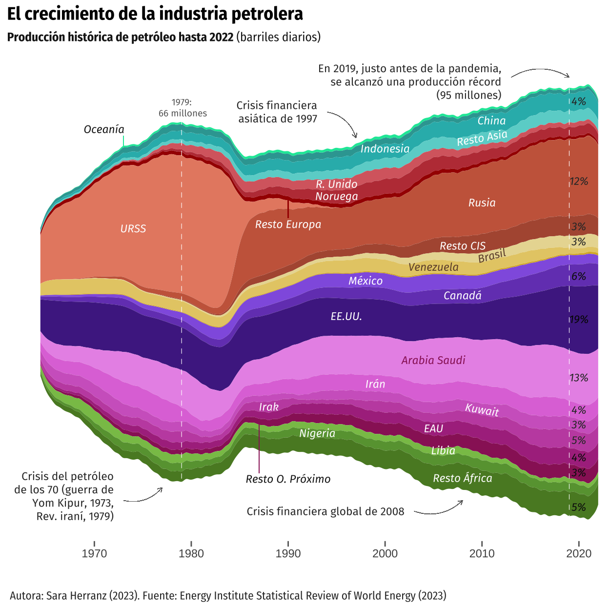
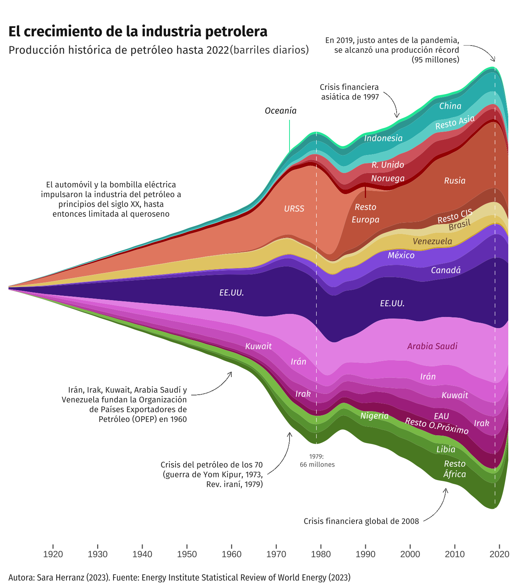
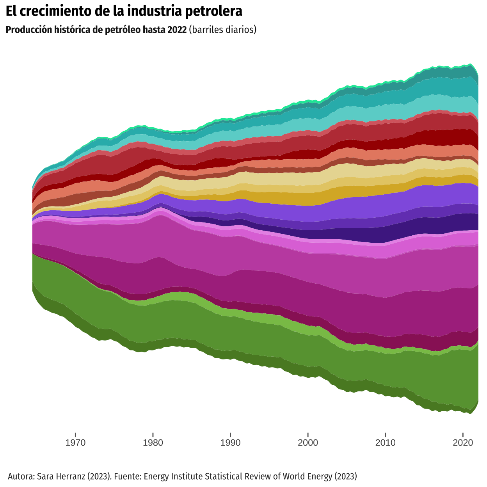
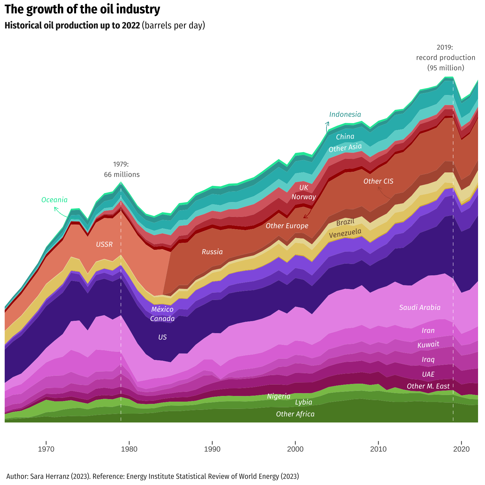
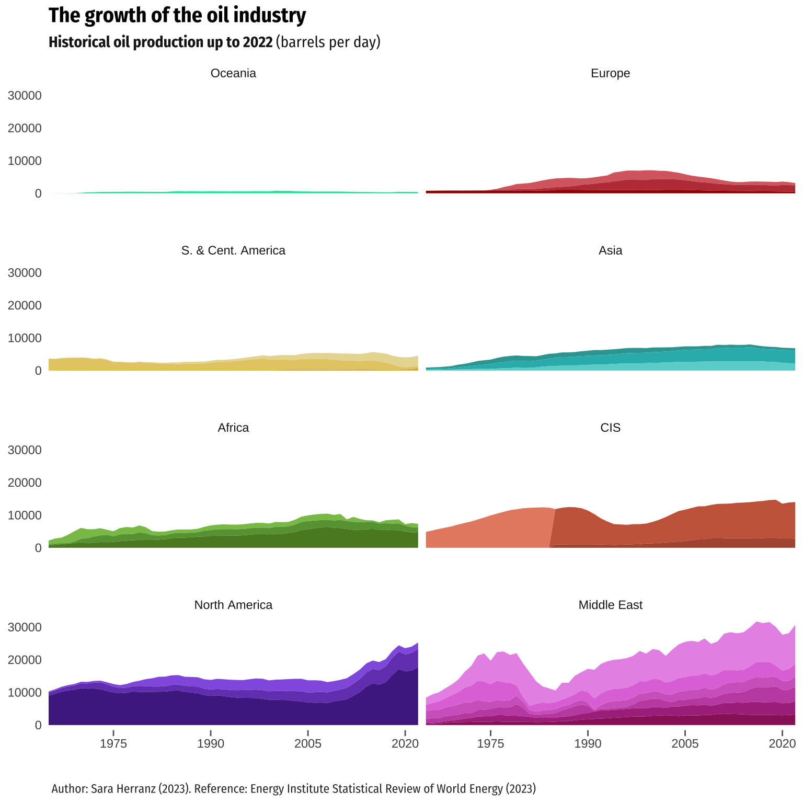
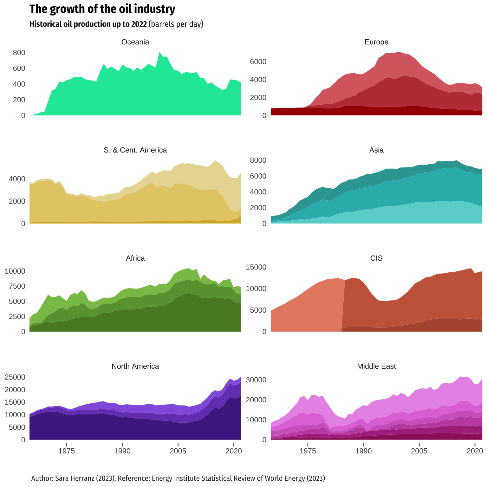

Replication of a graph from El Orden Mundial which aims to represent the evolution of oil production since 1910.
On September 28, 2023, El Orden Mundial, a digital independent media focused on high-quality and in-depth international analysis, published the article ¿Cerca del peak oil? Así ha crecido la producción de petróleo en el último siglo, which would translate as Approaching Peak Oil? This is how oil production has grown in the last century. The author of the visualization and the article is Álvaro Merino.
This report aims to discuss this graphic considering some issues, such as the information it intends to show, the general characteristics and strengths of this type of graphic, the necessary steps to built a replica using R and some points of improvements, proposing a couple of graph alternatives.
A stream graph is a type of stacked area chart. It represents the evolution of a numeric variable (Y axis) following another numeric value (X axis), for several groups with different colors. Areas are usually displayed around a central axis, and edges are rounded to give a flowing and organic shape. These graphs are good to study the relative proportions of the whole, but they are bad to study the evolution of each individual group.
For the current case, and as the title of the visualization suggests, the author was interested in analyzing the overall distribution of the different countries within the whole context of oil producer countries, rather than the detailed changes of each specific country. However, although this can be seen in the original plot below, it becomes way more clear when analyzing the replication process replication. We will delve further into this in the corresponding section.
Finally, we would like to highlight some positive and negative aspects of the original plot. Regarding the positives, the chosen format is quite striking and appropriate for representing the intended information. The color grouping, not only by country but also changing the shade by region, facilitates the assimilation of the data.
However, concerning the areas for improvement that we took into account when selecting this graph for the final project, we primarily emphasize the amount of text that appeared, as it hindered the readability of the graph. Likewise, the reservoir map was too small and could have appeared as a separate graph to complement it, as it also lacks a country-wise division for easier interpretation. This graph was not included in the replication because we did not have the data for it and we were not able to find it. Finally, the percentages at the end of the represented streams were not very clear regarding what they represented (whether they referred to the total for that year or the overall total).
The article collected data from the Statistical Review of World Energy from the Energy Institute. Specifically, the data used for the replication was that published in XSLX panel format in Consolidated Dataset - Panel Format. Therefore, we started by uploading the data base, deleting unnecessary columns and NAs from the main variable (oilprod_kbd):
Then, we organized the countries. First, a vector including the countries that needed to appear explicitly in our graph was created, which was also used to create a new data frame where all these countries appeared. We then filtered the original database to select the undesired countries and aggregated them by region. This approach allowed us to assign the name of the region to the aggregated data. Finally, we merged the two data frames into a new one, panel_c.
countries <- c("Australia", "China", "Indonesia", "Norway", "Russian Federation",
"USSR", "United Kingdom", "Brazil", "Venezuela", "Mexico",
"Canada", "US", "Saudi Arabia", "Iran", "Kuwait", "Iraq", "Libya",
"United Arab Emirates", "Nigeria", "Other Africa",
"Other Asia Pacific", "Other CIS", "Other Caribbean",
"Other Eastern Africa", "Other Europe", "Other Middle Africa",
"Other Middle East", "Other Northern Africa",
"Other S. & Cent. America", "Other South America",
"Other Western Africa")
# Filtering data by country of interest
panel_a <- panel |>
group_by(Region, Country) |>
filter(Country %in% countries) |>
mutate(Region = if_else(Country == "Australia", "Oceania", Region)) |>
select(-c(pop, ISO3166_alpha3, ISO3166_numeric, SubRegion, oilprod_mt))
# Filtering data by countries that are not of our interest and aggregating them
panel_b <- panel |>
filter(!Country %in% countries) |>
group_by(Year, Region) |>
summarise(oilprod_kbd = sum(oilprod_kbd), .groups = 'drop') |>
mutate(Country = Region) |>
select(Country, everything()) |>
filter(!is.na(Region)) |>
arrange(Country)
# Combining both data frames into a new one
panel_c <- bind_rows(panel_a, panel_b)Once panel_c was generated, we moved on to refining the regional variables. To achieve this, we first named six different vectors after the main regions, which included the countries from panel_b (it is worth remembering that these countries were labeled according to the region they belonged to, rather than their individual country names). Next, we created individual data frames for each region. In these, we aggregated the oil production by year, presenting them as “Other -said continent-” in the resulting data frame. Finally, a new data frame, panel_d, was formed by merging all the individual region data frames.
# Vectors for main regions
asia <- c("Asia Pacific", "Other Asia Pacific")
africa <- c("Africa", "Other Africa", "Other Eastern Africa", "Other Middle Africa",
"Other Northern Africa", "Other Western Africa")
middle_east <- c("Middle East", "Other Middle East")
europe <- c("Europe", "Other Europe")
america <- c("Other Caribbean", "Other S. & Cent. America", "Other South America",
"S. and Cent. America")
cis <- c("CIS", "Other CIS")
# Data frame for each region
asia <- panel_c |>
filter(Country %in% asia) |>
group_by(Year, Country) |>
mutate(Country = if_else(Country %in% asia, "Other Asia", Country)) |>
arrange(Year) |>
summarise(oilprod_kbd = sum(oilprod_kbd), .groups = 'drop')
africa <- panel_c |>
filter(Country %in% africa) |>
group_by(Year, Country) |>
mutate(Country = if_else(Country %in% africa, "Other Africa", Country)) |>
arrange(Year) |>
summarise(oilprod_kbd = sum(oilprod_kbd), .groups = 'drop')
middle_east <- panel_c |>
filter(Country %in% middle_east) |>
group_by(Year, Country) |>
mutate(Country = if_else(Country %in% middle_east, "Other Middle East", Country)) |>
arrange(Year) |>
summarise(oilprod_kbd = sum(oilprod_kbd), .groups = 'drop')
europe <- panel_c |>
filter(Country %in% europe) |>
group_by(Year, Country) |>
mutate(Country = if_else(Country %in% europe, "Other Europe", Country)) |>
arrange(Year) |>
summarise(oilprod_kbd = sum(oilprod_kbd), .groups = 'drop')
america <- panel_c |>
filter(Country %in% america) |>
group_by(Year, Country) |>
mutate(Country = if_else(Country %in% america, "Other South America", Country)) |>
arrange(Year) |>
summarise(oilprod_kbd = sum(oilprod_kbd), .groups = 'drop')
cis <- panel_c |>
filter(Country %in% cis) |>
group_by(Year, Country) |>
mutate(Country = if_else(Country %in% cis, "Other CIS", Country)) |>
arrange(Year) |>
summarise(oilprod_kbd = sum(oilprod_kbd), .groups = 'drop')
# Data frame merging the region ones
panel_d <- bind_rows(asia, africa, middle_east, europe, america, cis)
panel_d <- panel_d |>
mutate(Region = Country) |>
select(Country, Year, Region, everything())The final data frame was formed by combining panel_d and panel_a. Some name adjustments were implemented to streamline the existing data, and the variables Region and Country were organized in the order observed in the original graph.
# Final data frame
panel_f <- bind_rows(panel_d, panel_a)
panel_f <- panel_f |>
filter(!is.na(Region)) |>
mutate(Region = if_else(Region == "Other Europe", "Europe", Region)) |>
mutate(Region = if_else(Region == "Other Asia", "Asia", Region)) |>
mutate(Region = if_else(Region == "Asia Pacific", "Asia", Region)) |>
mutate(Region = if_else(Region == "Other Middle East", "Middle East",
Region)) |>
mutate(Region = if_else(Region == "Other Africa", "Africa", Region)) |>
mutate(Region = if_else(Region == "Other South America", "S. & Cent. America",
Region)) |>
mutate(Region = if_else(Region == "Other CIS", "CIS", Region)) |>
arrange(Region, Country)
# To determine the desired order of appearance for the regions in the graph
panel_f$Region <- factor(panel_f$Region, levels = c("Oceania", "Asia", "Europe",
"CIS", "S. & Cent. America",
"North America", "Middle East",
"Africa"))
panel_f$Country <- factor(panel_f$Country, levels = c("Australia", "Indonesia",
"China", "Other Asia",
"United Kingdom", "Norway",
"Other Europe", "USSR",
"Russian Federation",
"Other CIS", "Brazil",
"Venezuela",
"Other South America",
"Mexico", "Canada", "US",
"Saudi Arabia", "Iran",
"Kuwait", "Iraq",
"United Arab Emirates",
"Other Middle East", "Libya",
"Nigeria", "Other Africa"))
panel_f <-
panel_f |>
arrange(Country, Region)Panel_f was the data frame ultimately used for creating a replica of the graph. However, we encountered certain challenges with the data, such as dealing with missing data from 1900 to 1965 and the distribution peculiarities of Russia, which consisted of two distinct observation groups (USSR and Russian Federation). These impacted the representation of the data. In section “Addressing some issues”, after presenting the definitive graph replication, we discuss the proposed adjustments and the reasons they were ultimately discarded.
We began by defining certain aesthetic aspects and later combined them all using ggplot. First, we proceeded to define those related to colors, scales, axes, background, key and other lines in the graph.
# Colors
mycolors <- c("#08e7a7","#33a4a1", "#2bb8b9", "#6ad3d0", "#d86a6f", "#be3e44",
"#a60400", "#e78b71", "#ca664a", "#b1583f", "#e9daa1", "#e6cc75",
"#dab330", "#9263e1", "#7546be", "#4f2991", "#e997e8", "#e079db",
"#d168c7", "#c453b0", "#ad358d", "#9a2366", "#89c257", "#68a03f",
"#59882c")
colors <- scale_fill_manual(values = mycolors)
# Scales
scale <- c(scale_x_continuous(name = NULL, limits = c(1961, 2022),
breaks = seq(from = 1970, to = 2020, by = 10),
expand = expansion(0)),
scale_y_continuous(name = NULL, labels = NULL, position = "right",
expand = expansion(add = c(5000, 5500))))
# Axes
axes <- theme(axis.line.y = element_blank(), axis.ticks.y = element_blank())
ticks <- theme(axis.ticks.x = element_line(color = "gray40"),
axis.ticks.length.x = unit(0.15, "cm"))
# Background and key
theme <- theme(panel.grid.major = element_blank(),
panel.grid.minor = element_blank(),
legend.position = "none",
plot.caption = element_text(hjust = 0, color = "gray20"))
# Arrows and lines
arrows <- c(geom_curve(aes(x = 2013, y = 52000, xend = 2019, yend = 52000),
colour = "grey40",
arrow = arrow(length = unit(0.01, "npc"), type = "open"),
curvature = -0.3, linewidth = 0.01),
geom_curve(aes(x = 1994, y = 44000, xend = 1997, yend = 38000),
colour = "grey40",
arrow = arrow(length = unit(0.01, "npc"), type = "open"),
curvature = -0.3, linewidth = 0.01),
geom_curve(aes(x = 2003, y = -48500, xend = 2008, yend = -46000),
colour = "grey40",
arrow = arrow(length = unit(0.01, "npc"), type = "open"),
curvature = 0.3, linewidth = 0.01),
geom_curve(aes(x = 1973, y = -46000, xend = 1977, yend = -43000),
colour = "grey40",
arrow = arrow(length = unit(0.01, "npc"), type = "open"),
curvature = 0.3, linewidth = 0.01),
geom_segment(aes(x = 1973, y = 38500, xend = 1973, yend = 36000),
color = "#08e7a7",
linewidth = 0.2),
geom_segment(aes(x = 1990, y = 19500, xend = 1990, yend = 24200),
color = "#a60400",
linewidth = 0.3),
geom_segment(aes(x = 1987, y = -28200, xend = 1987, yend = -39700),
color = "#9a2366",
linewidth = 0.2),
geom_vline(xintercept = c(1979, 2019),
linetype = "dashed",
color = "white",
linewidth = 0.2))Then, we worked with the aesthetics involving text, such as annotation, labels, titles and subtitles.
# Text font
sysfonts::font_add_google("Fira Sans Condensed")
sysfonts::font_add_google("Fira Sans")
# Labels
subtitle <- expression(paste(bold("Producción histórica de petróleo hasta 2022"),
" (barriles diarios)"))
labels <- labs(title = "El crecimiento de la industria petrolera",
subtitle = subtitle,
caption = "\n \n Autora: Sara Herranz (2023). Fuente: Energy Institute Statistical Review of World Energy (2023)")
labelstheme <- theme(plot.title = element_text(family = "Fira Sans Condensed",
size = 14,
face = "bold"),
plot.subtitle = element_text(family = "Fira Sans Condensed",
size = 9.5,
color = "gray10", face = "bold"),
plot.caption = element_text(family = "Fira Sans Condensed"))
# Percentage annotations
# First, we compute the percentages
panel_per <- panel_f |>
filter(Year == "2022") |>
mutate(percent = round((oilprod_kbd/(sum(oilprod_kbd)))*100)) |>
filter(percent > 2) |>
arrange(Country, Region)
# Second, we create the annotations
percent_annotations <-
c(annotate("text", x = 2020, y = 46500, size = 3, label = paste("4%"),
color = "grey20", family = "Fira Sans", fontface = "italic"),
annotate("text", x = 2020, y = 28000, size = 3, label = paste("12%"),
color = "grey20", family = "Fira Sans", fontface = "italic"),
annotate("text", x = 2020, y = 17500, size = 3, label = paste("3%"),
color = "grey20", family = "Fira Sans", fontface = "italic"),
annotate("text", x = 2020, y = 14000, size = 3, label = paste("3%"),
color = "grey20", family = "Fira Sans", fontface = "italic"),
annotate("text", x = 2020, y = 6000, size = 3, label = paste("6%"),
color = "grey6", family = "Fira Sans", fontface = "italic"),
annotate("text", x = 2020, y = -4000, size = 3, label = paste("19%"),
color = "grey2", family = "Fira Sans", fontface = "italic"),
annotate("text", x = 2020, y = -17500, size = 3, label = paste("13%"),
color = "grey20", family = "Fira Sans", fontface = "italic"),
annotate("text", x = 2020, y = -25000, size = 3, label = paste("4%"),
color = "grey20", family = "Fira Sans", fontface = "italic"),
annotate("text", x = 2020, y = -28400, size = 3, label = paste("3%"),
color = "grey20", family = "Fira Sans", fontface = "italic"),
annotate("text", x = 2020, y = -32000, size = 3, label = paste("5%"),
color = "grey20", family = "Fira Sans", fontface = "italic"),
annotate("text", x = 2020, y = -36000, size = 3, label = paste("4%"),
color = "grey6", family = "Fira Sans", fontface = "italic"),
annotate("text", x = 2020, y = -39500, size = 3, label = paste("3%"),
color = "grey6", family = "Fira Sans", fontface = "italic"),
annotate("text", x = 2020, y = -47500, size = 3, label = paste("5%"),
color = "grey6", family = "Fira Sans", fontface = "italic"))
# Text annotations
text_annotations <-
c(annotate("text", x = 2012, y = 51000, hjust = 1, vjust = 0.5, size = 3,
label = paste("En 2019, justo antes de la pandemia,\n se alcanzó una producción récord\n (95 millones)"),
color = "grey20", family = "Fira Sans", lineheight = 1),
annotate("text", x = 1993, y = 44000, hjust = 1, vjust = 0.5, size = 3,
label = paste("Crisis financiera\nasiática de 1997"),
color = "grey20", family = "Fira Sans", lineheight = 1),
annotate("text", x = 1972, y = -45000, hjust = 1, vjust = 0.5, size = 3,
label = paste("Crisis del petróleo\nde los 70 (guerra de\nYom Kipur, 1973,\nRev. iraní, 1979)"),
color = "grey20", family = "Fira Sans", lineheight = 1),
annotate("text", x = 1979, y = 45000, hjust = 0.5, vjust = 0.5, size = 2.5,
label = paste("1979:\n 66 millones"),
color = "grey40", family = "Fira Sans", lineheight = 1),
annotate("text", x = 2002, y = -48500, hjust = 1, vjust = 0.5, size = 3,
label = paste("Crisis financiera global de 2008"),
color = "grey20", family = "Fira Sans", lineheight = 1))
# Country labels
country_annotations <-
c(annotate("text", x = 1971, y = 40000, size = 3, label = paste("Oceanía"),
color = "grey10", family = "Fira Sans", fontface = "italic"),
annotate("text", x = 2011, y = 42000, size = 3, label = paste("China"),
color = "white", family = "Fira Sans", fontface = "italic"),
annotate("text", x = 2000, y = 35500, size = 3, label = paste("Indonesia"),
color = "white", family = "Fira Sans", fontface = "italic"),
annotate("text", x = 2010, y = 38000, size = 3, label = paste("Resto Asia"),
color = "white", family = "Fira Sans", srt = 10, fontface = "italic"),
annotate("text", x = 1995, y = 27300, size = 3, label = paste("R. Unido"),
color = "white", family = "Fira Sans", fontface = "italic"),
annotate("text", x = 1995, y = 24500, size = 3, label = paste("Noruega"),
color = "white", family = "Fira Sans", fontface = "italic"),
annotate("text", x = 1990, y = 18000, size = 3, label = paste("Resto Europa"),
color = "white", family = "Fira Sans", fontface = "italic"),
annotate("text", x = 1974, y = 17000, size = 3, label = paste("URSS"),
color = "white", family = "Fira Sans", fontface = "italic"),
annotate("text", x = 2010, y = 23000, size = 3, label = paste("Rusia"),
color = "white", family = "Fira Sans", fontface = "italic"),
annotate("text", x = 2008, y = 13000, size = 3, label = paste("Resto CIS"),
color = "white", family = "Fira Sans", fontface = "italic"),
annotate("text", x = 2011, y = 10700, size = 3, label = paste("Brasil"),
color = "#6f4e37", family = "Fira Sans", fontface = "italic", srt = 15),
annotate("text", x = 2005, y = 8100, size = 3, label = paste("Venezuela"),
color = "#6f4e37", family = "Fira Sans", fontface = "italic"),
annotate("text", x = 1998, y = 4900, size = 3, label = paste("México"),
color = "white", family = "Fira Sans", fontface = "italic"),
annotate("text", x = 2008, y = 1500, size = 3, label = paste("Canadá"),
color = "white", family = "Fira Sans", fontface = "italic"),
annotate("text", x = 1996, y = -3300, size = 3, label = paste("EE.UU."),
color = "white", family = "Fira Sans", fontface = "italic"),
annotate("text", x = 2005, y = -13500, size = 3, label = paste("Arabia Saudi"),
color = "#9a2366", family = "Fira Sans", fontface = "italic"),
annotate("text", x = 1999, y = -19000, size = 3, label = paste("Irán"),
color = "white", family = "Fira Sans", fontface = "italic"),
annotate("text", x = 2010, y = -25000, size = 3, label = paste("Kuwait"),
color = "white", family = "Fira Sans", srt = -10, fontface = "italic"),
annotate("text", x = 1988, y = -24300, size = 3, label = paste("Irak"),
color = "white", family = "Fira Sans", fontface = "italic"),
annotate("text", x = 2005, y = -29300, size = 3, label = paste("EAU"),
color = "white", family = "Fira Sans", fontface = "italic"),
annotate("text", x = 1990, y = -41000, size = 3, label = paste("Resto O. Próximo"),
color = "grey10", family = "Fira Sans", fontface = "italic"),
annotate("text", x = 1993, y = -30400, size = 3, label = paste("Nigeria"),
color = "white", family = "Fira Sans", fontface = "italic"),
annotate("text", x = 2006, y = -34400, size = 3, label = paste("Libia"),
color = "white", family = "Fira Sans", fontface = "italic"),
annotate("text", x = 2008, y = -40800, size = 3, label = paste("Resto África"),
color = "white", family = "Fira Sans", fontface = "italic"))The next version of the plot included these aesthetics. As mentioned earlier, what it represents is how the different proportions of each country relate to each other, rather than examining the specific changes of each group. Thus, the sense of flowing, curvy appearance and smooth transition is evident in this visualization.
It is also important to note that some changes were made to the data because we considered them essential. Firstly, ‘Other CIS’ was added to the data, and Libya was repositioned. In the original graph, Libya was included among the countries in the Middle East region, but we deemed it more appropriate to relocate it to Africa, as it is geographically situated there. On the other hand, ‘Other South America’ is not represented, even though it has sufficient data to be included.
plot <- ggplot(data = panel_f) +
aes(x = Year, y = oilprod_kbd, fill = Country) +
geom_stream(type = "mirror",
bw = 0.56,
true_range = "max_x") +
colors + scale + axes + theme_minimal() + ticks +
labels + labelstheme + percent_annotations +
text_annotations + country_annotations + theme + arrows
plot
As seen in the previous graph and mentioned before, we encountered certain challenges with the data, such as handling missing data from 1900 to 1965 and addressing the distribution peculiarities of Russia, which consisted of two distinct observation groups (USSR and Russian Federation).
Regarding the first issue, Professor Iñaki suggested to include a 0 in the oilprod_kbd variable for the year 1910 in each country However, we managed to define a function that progressively reduced the value of the variable oilprod_kbd from its value in 1965 for each country until 0 in 1910. We opted for 15 instead of 0, as in the original idea, because, in reality, the distribution in the original graph tends toward zero but does not appear to reach that value.
On the other hand, after implementing this improvement, we recognized that its main flaw was that the data added to the variable ‘oilprod_kbd’ for each country did not adhere to the same distribution as the available oilprod_kbd data for each country. We attempted to devise a function that considered this existing distribution for each country between the years 1965-2022 (1975-2022 for Norway and 1985-2022 for the USSR and Other CIS) aiming for the newly generated values for the period 1910-1965 to follow the same distribution. Said function worked by applying the ecdf (Empirical Cumulative Distribution Function) to the data distribution. Unfortunately, despite several attempts, we couldn’t make it work. Given that the complexity of the mentioned function surpasses the requirements of this course, we decided to adhere to the solution depicted below, even though it does not entirely align with the original graph.
# Adding the necessary rows (from 1910 to 1964)
rows <- tibble(Country = rep(c("Australia", "Indonesia", "China", "Other Asia",
"United Kingdom", "Norway", "Other Europe", "USSR",
"Russian Federation", "Other CIS", "Brazil",
"Venezuela", "Other South America", "Mexico", "Canada",
"US", "Saudi Arabia", "Iran", "Kuwait", "Iraq",
"United Arab Emirates", "Other Middle East", "Libya",
"Nigeria", "Other Africa"), each = 55),
Year = rep(seq(1910, 1964), length.out = 1375),
Region = rep(c("Oceania", "Asia", "Asia", "Asia", "Europe", "Europe",
"Europe", "CIS", "CIS", "CIS", "S. & Cent. America",
"S. & Cent. America", "S. & Cent. America",
"North America", "North America", "North America",
"Middle East", "Middle East", "Middle East",
"Middle East", "Middle East", "Middle East", "Africa",
"Africa", "Africa"), each = 55),
oilprod_kbd = 15)
norway_rows <- tibble(Country = rep("Norway", each = 6),
Year = seq(1965, 1970),
Region = rep("Europe", each = 6),
oilprod_kbd = 15)
rf_rows <- tibble(Country = rep("Russian Federation", each = 20),
Year = seq(1965, 1984),
Region = rep("Other CIS", each = 20),
oilprod_kbd = 15)
oc_rows <- tibble(Country = rep("Other CIS", each = 20),
Year = seq(1965, 1984),
Region = rep("Other CIS", each = 20),
oilprod_kbd = 15)
# Merging the new data together and then binding it to the original one
rows <- bind_rows(rows, norway_rows, rf_rows, oc_rows)
panel_g <- rbind(panel_f, rows)
panel_g <- panel_g |>
arrange(Country, Year) |>
mutate(Year = as.numeric(Year))
# Function to interpolate oilprod_kbd
interp_values <- function(country_df) {
approx(
x = c(1965, 1910),
y = c(country_df$oilprod_kbd[country_df$Year == 1965], 15),
xout = country_df$Year
)$y
}
# Applying the function to each country
df_interp <- panel_g |>
group_by(Country) |>
nest() |>
mutate(oilprod_kbd_interp = map(data, interp_values)) |>
unnest(cols = c(data, oilprod_kbd_interp))
# Merging the interpolated data and the original data
alternative <- full_join(panel_g, df_interp, by = c("Year", "Country"))
# Arranging and filtering the data
alternative_f <- alternative |>
arrange(Country, Year) |>
select(-c(oilprod_kbd.x, Region.x)) |>
mutate(oilprod_kbd.y = case_when(
Country == "Norway" & Year > 1975 ~ oilprod_kbd.y,
(Country == "Russian Federation" | Country == "CIS") & Year > 1985 ~ oilprod_kbd.y,
Country != "Norway" & Country != "Russian Federation"
& Country != "CIS" & Year > 1965 ~ oilprod_kbd.y,
TRUE ~ oilprod_kbd_interp))Once the new data frame was set, we defined some adjustments to fit the new data.
# Adjusting the scale to fit the new data
scale1 <- c(scale_x_continuous(name = NULL, limits = c(1910, 2022),
breaks = seq(from = 1920, to = 2020, by = 10),
expand = expansion(0)),
scale_y_continuous(name = NULL, labels = NULL,
expand = expansion(add = c(5000, 5500))))
# Text annotations
labels1 <- labs(caption = "\nAutora: Sara Herranz (2023). Fuente: Energy Institute Statistical Review of World Energy (2023)")
labelstheme1 <- theme(plot.caption = element_text(family = "Fira Sans Condensed"))
text_annotations1 <- c(
annotate("text", x = 1910, y = 51000, hjust = 0, vjust = 0.5, size = 3.8,
label = paste("Producción histórica de petróleo hasta 2022"),
color = "grey20", family = "Fira Sans"), #subtitle
annotate("text", x = 1959, y = 51000, hjust = 0, vjust = 0.5, size = 3.6,
label = paste(" (barriles diarios)"),
color = "grey30", family = "Fira Sans"), #subtitle
annotate("text", x = 1910, y = 55000, hjust = 0, vjust = 0.5, size = 5,
label = paste("El crecimiento de la industria petrolera"),
color = "grey10", family = "Fira Sans", fontface = "bold"), #title
annotate("text", x = 2011, y = 51000, hjust = 1, vjust = 0.5, size = 2.8,
label = paste("En 2019, justo antes de la pandemia,\n se alcanzó una producción récord\n (95 millones)"),
color = "grey20", family = "Fira Sans", lineheight = 1),
annotate("text", x = 1993, y = 42000, hjust = 1, vjust = 0.5, size = 2.8,
label = paste("Crisis financiera\nasiática de 1997"),
color = "grey20", family = "Fira Sans", lineheight = 1),
annotate("text", x = 1967, y = -40000, hjust = 1, vjust = 0.5, size = 2.8,
label = paste("Crisis del petróleo de los 70\n (guerra de Yom Kipur, 1973,\nRev. iraní, 1979)"),
color = "grey20", family = "Fira Sans", lineheight = 1),
annotate("text", x = 1950, y = -25000, hjust = 1, vjust = 0.5, size = 2.8,
label = paste("Irán, Irak, Kuwait, Arabia Saudí y\nVenezuela fundan la Organización\nde Países Exportadores de\nPetróleo (OPEP) en 1960"),
color = "grey20", family = "Fira Sans", lineheight = 1),
annotate("text", x = 1933, y = 19000, hjust = 0.5, vjust = 0.5, size = 2.8,
label = paste("El automóvil y la bombilla eléctrica\nimpulsaron la industria del petróleo a\nprincipios del siglo XX, hasta\nentonces limitada al queroseno"),
color = "grey20", family = "Fira Sans", lineheight = 1),
annotate("text", x = 1979, y = -37000, hjust = 0.5, vjust = 0.5, size = 2.3,
label = paste("1979:\n 66 millones"),
color = "grey40", family = "Fira Sans", lineheight = 1),
annotate("text", x = 2002, y = -50000, hjust = 1, vjust = 0.5, size = 2.8,
label = paste("Crisis financiera global de 2008"),
color = "grey20", family = "Fira Sans", lineheight = 1))
# Arrows and lines
arrows1 <- c(geom_curve(aes(x = 1951, y = -23000, xend = 1960, yend = -18000),
colour = "grey40",
arrow = arrow(length = unit(0.01, "npc"), type = "open"),
curvature = 0.3, linewidth = 0.01),
geom_curve(aes(x = 2012, y = 52000, xend = 2019, yend = 48500),
colour = "grey40",
arrow = arrow(length = unit(0.01, "npc"), type = "open"),
curvature = -0.3, linewidth = 0.01),
geom_curve(aes(x = 1994, y = 42000, xend = 1997, yend = 36500),
colour = "grey40",
arrow = arrow(length = unit(0.01, "npc"), type = "open"),
curvature = -0.3, linewidth = 0.01),
geom_curve(aes(x = 2003, y = -50000, xend = 2008, yend = -43000),
colour = "grey40",
arrow = arrow(length = unit(0.01, "npc"), type = "open"),
curvature = 0.3, linewidth = 0.01),
geom_curve(aes(x = 1968, y = -40000, xend = 1973, yend = -31000),
colour = "grey40",
arrow = arrow(length = unit(0.01, "npc"), type = "open"),
curvature = 0.3, linewidth = 0.01),
geom_segment(aes(x = 1973, y = 36000, xend = 1973, yend = 29000),
color = "#08e7a7",
linewidth = 0.2),
geom_segment(aes(x = 1990, y = 21800, xend = 1990, yend = 19300),
color = "#a60400",
linewidth = 0.3),
#geom_segment(aes(x = 1987, y = -28200, xend = 1987, yend = -39700),
#color = "#9a2366",
#linewidth = 0.2),
geom_vline(xintercept = c(1979, 2019),
linetype = "dashed",
color = "white",
linewidth = 0.2))# Country labels
country_annotations1 <-
c(annotate("text", x = 1971, y = 38000, size = 3, label = paste("Oceanía"),
color = "grey10", family = "Fira Sans", fontface = "italic"),
annotate("text", x = 2009, y = 39000, size = 3, label = paste("China"),
color = "white", family = "Fira Sans", fontface = "italic"),
annotate("text", x = 1994, y = 32100, size = 3, label = paste("Indonesia"),
color = "white", family = "Fira Sans", fontface = "italic"),
annotate("text", x = 2010, y = 35500, size = 3, label = paste("Resto Asia"),
color = "white", family = "Fira Sans", srt = 13, fontface = "italic"),
annotate("text", x = 1995, y = 26400, size = 3, label = paste("R. Unido"),
color = "white", family = "Fira Sans", fontface = "italic"),
annotate("text", x = 1995, y = 23500, size = 3, label = paste("Noruega"),
color = "white", family = "Fira Sans", fontface = "italic"),
annotate("text", x = 1990, y = 16000, size = 3, label =paste("Resto\nEuropa"),
color = "white", family = "Fira Sans", fontface = "italic"),
annotate("text", x = 1974, y = 17000, size = 3, label = paste("URSS"),
color = "white", family = "Fira Sans", fontface = "italic"),
annotate("text", x = 2010, y = 23000, size = 3, label = paste("Rusia"),
color = "white", family = "Fira Sans", fontface = "italic"),
annotate("text", x = 2010, y = 15370, size = 3, label = paste("Resto CIS"),
color = "white", family = "Fira Sans", fontface = "italic", srt=15),
annotate("text", x = 2011, y = 13500, size = 3, label = paste("Brasil"),
color = "#6f4e37", family = "Fira Sans", fontface="italic", srt=15),
annotate("text", x = 2005, y = 10000, size = 3, label = paste("Venezuela"),
color = "#6f4e37", family = "Fira Sans", fontface = "italic"),
annotate("text", x = 1998, y = 7000, size = 3, label = paste("México"),
color = "white", family = "Fira Sans", fontface = "italic"),
annotate("text", x = 2008, y = 3800, size = 3, label = paste("Canadá"),
color = "white", family = "Fira Sans", fontface = "italic"),
annotate("text", x = 1996, y = -3300, size = 3, label = paste("EE.UU."),
color = "white", family = "Fira Sans", fontface = "italic"),
annotate("text", x = 1960, y = -1000, size = 3, label = paste("EE.UU."),
color = "white", family = "Fira Sans", fontface = "italic"),
annotate("text", x = 2005, y = -12500, size = 3, label = paste("Arabia Saudi"),
color = "#9a2366", family = "Fira Sans", fontface = "italic"),
annotate("text", x = 2004, y = -19000, size = 3, label = paste("Irán"),
color = "white", family = "Fira Sans", fontface = "italic"),
annotate("text", x = 1975, y = -15800, size = 3, label = paste("Irán"),
color = "white", family = "Fira Sans", fontface = "italic"),
annotate("text", x = 2010, y = -23000, size = 3, label = paste("Kuwait"),
color = "white", family = "Fira Sans", fontface = "italic"),
annotate("text", x = 1966, y = -12500, size = 3, label = paste("Kuwait"),
color = "white", family = "Fira Sans", fontface = "italic"),
annotate("text", x = 2016, y = -29000, size = 3, label = paste("Irak"),
color = "white", family = "Fira Sans", fontface = "italic"),
annotate("text", x = 1976, y = -22700, size = 3, label = paste("Irak"),
color = "white", family = "Fira Sans", fontface = "italic"),
annotate("text", x = 2007, y = -27500, size = 3, label = paste("EAU"),
color = "white", family = "Fira Sans", fontface = "italic"),
annotate("text", x = 2006, y = -29600, size = 3, label=paste("Resto O.Próximo"),
color = "white", family = "Fira Sans", fontface = "italic", srt = -10),
annotate("text", x = 1992, y = -27400, size = 3, label = paste("Nigeria"),
color = "white", family = "Fira Sans", fontface = "italic"),
annotate("text", x = 2008, y = -34600, size = 3, label = paste("Libia"),
color = "white", family = "Fira Sans", fontface = "italic"),
annotate("text", x = 2010, y = -38800, size = 3, label = paste("Resto\nÁfrica"),
color = "white", family = "Fira Sans", fontface = "italic",
lineheight = 1))plot2 <- ggplot(data = alternative_f) +
aes(x = Year, y = oilprod_kbd.y, fill = Country) +
geom_stream(type = "mirror",
bw = 0.56,
true_range = "max_x") +
colors + scale1 + axes + theme_minimal() + ticks +
labels1 + labelstheme1 +
text_annotations1 + country_annotations1 + theme + arrows1
plot2
While we couldn’t replicate the exact shape and distribution of the missing values from the original plot, we believe this serves as a commendable alternative to our initial visualization attempt. Furthermore, as mentioned earlier, geom_stream is useful for studying the relative proportion of the whole. This is evident in the updated graph, where the representation of the available data appears more accurate compared to the original plot.
It also should be noted that certain aesthetic aspects implemented in this replica could not be preserved due to the alteration in the data distribution. This is evident in the percentages at the end; by modifying the joint data distribution, the values of the dependent variable in the last year decrease, leaving little room to include these labels as they appear in the original graph.
The USSR and Russian Federation observations concerned us for two reasons. Firstly, despite having data only until 1984 for the USSR, the characteristics of geom_stream extended the data in the opposite direction to the existing data, distorting the data distribution. On the other hand, we wanted to compare the number of barrels produced (oilprod_kbd) for the US and USSR/Russian Federation in different years, given that in the original graph, the thickness of these streams appeared similar. Upon filtering the data, we were able to verify that the data distributions were similar, despite the graphical representation showing significant differences.
Thus, concerning the data from the USSR and the Russian Federation, we aimed to combine the observations of both countries into a single entity to examine how it influenced the data or whether the distribution resembled that of the original graph. Therefore, we recoded the observations of the USSR so that all of them appeared as the Russian Federation.
# Running some tests to compare USSR and US
test <- panel_f |>
filter(Country == c("USSR", "US")) |>
group_by(Year)
# Merging USSR and Russian Federation into one observation
panel_h <-
panel_f |>
arrange(Country, Region) |>
mutate(Country = if_else(Country == "USSR", "Russian Federation", Country))After establishing the new data frame, we implemented several adjustments to align with the updated data. Some aesthetics are missing as we solely aimed to observe how the data was distributed. However, as illustrated in the graph below, the distribution of the resulting data deviates from the anticipated outcome. Consequently, we made the decision to discard it.
mycolors2 <- c("#08e7a7","#33a4a1", "#2bb8b9", "#6ad3d0", "#d86a6f", "#be3e44",
"#a60400", "#e78b71", "#b1583f", "#e9daa1", "#e6cc75", "#dab330",
"#9263e1", "#7546be", "#4f2991", "#e997e8", "#e079db", "#d168c7",
"#c453b0", "#ad358d", "#9a2366", "#89c257", "#68a03f", "#59882c")
colors2 <- scale_fill_manual(values = mycolors2)
plot3 <- ggplot(data = panel_h) +
aes(x = Year, y = oilprod_kbd, fill = Country) +
geom_stream(type = "mirror",
bw = 0.56,
true_range = "max_x") +
colors2 + labels + scale + axes +
theme_minimal() + theme + labelstheme + ticks
plot3
To carry out the proposal for alternative visualizations, we took into consideration the original author’s objective, which was to depict the historical evolution of oil production for the entire oil industry. However, we also aimed to shift the focus to clearly visualize the regional and country-specific contributions. Both aspects were more apparent in the original stream graph. However, they were not as evident in the replication we conducted because the stream graph is useful for gaining a general understanding of the whole structure without getting bogged down by intricate details of each part’s evolution, but not so much for depicting the individual contributions.
Therefore, in order to keep the intention of the original author, we decided to make an alternative representation using a stacked area chart, and also to combine it with faceting techniques. On one hand, faceting generates small multiples each showing a different subset of the data. It is a powerful tool for exploratory data analysis: one can rapidly compare patterns in different parts of the data and see whether they are the same or different.
On the other hand, similarly to the stream graph, a stacked area chart displays the evolution of the value of several groups on the same graphic. The values of each group are displayed on top of each other, allowing to check the evolution of both the total of a numeric variable and the importance of each group. Thus, as it can be seen in the graph below, it is easier to observe variations in the contribution of each category. Additionally, the mentioned appearance resembles better the original graph, although it does not have the mirror aesthetic, since the original visualization not only displays the evolution of all the countries, but also the changes in the individual categories.
Returning to the features of the faceting employed, we have provided two complementary visualizations alongside the stream graph. The first faceting allows us to observe the contribution of each region to the total barrel production of oil. Additionally, it utilizes the same scale for the dependent variable (oilprod_kbd), enabling visual comparisons between regions. However, in the second faceting, we employ “scales =”free_y”“, which allows for representing different scales for each of the plots, thereby enabling the visualization of the individual evolution of oil production for each region.
It was necessary to make some considerations regarding the data used for the following graphs. Firstly, we employed the information available in the original database (after cleaning it to meet our requirements, of course), and we discarded the database that we created afterwards, which included information for oilprod_kbd in the period 1910-1964. The main reason for this decision was our desire to work with accurate and reliable data. Additionally, since the distribution of the new data created by the function we had defined did not align with the distribution of the existing data, it did not seem appropriate to use them for the alternative visualization. Furthermore, given that the data in the original database included separate observations for the USSR and the Russian Federation, we retained the same data frame for this enhancement. Consequently, due to the nature of the graph, which stacks areas on top of the previous ones, there is a gap in the representation of both observations in 1985. In order to adsress this we added 0 to the oilprod_kbd variable for the not available years of USSR and Other CIS (1985-2022) and Russian Federation (1965-1984). This worked perfectly fine. As a side note, we attempted to make the same adjustment in the visualizations that utilized geom_stream. However, due to the characteristics of the streamgraph, the differences were negligible.
On the other hand, we also modified some aesthetics, for instance, reducing the amount of text displayed to avoid overloading the graph.
# Adding the necessary rows to Russian Federation, Other CIS and USSR
p1 <- tibble(Country = rep("Russian Federation", each = 20),
Year = seq(1965, 1984),
Region = rep("Other CIS", each = 20),
oilprod_kbd = 0)
p2 <- tibble(Country = rep("Other CIS", each = 20),
Year = seq(1965, 1984),
Region = rep("Other CIS", each = 20),
oilprod_kbd = 0)
p3 <- tibble(Country = rep("USSR", each = 38),
Year = seq(1985, 2022),
Region = rep("Other CIS", each = 38),
oilprod_kbd = 0)
# Merging the new data together and then binding it to the original one
preb <- bind_rows(p1, p2, p3)
enhan1 <- rbind(panel_f, preb) # Labels
subtitle2 <- expression(paste(bold("Historical oil production up to 2022 "),
"(barrels per day)"))
labels2 <- labs(title = "The growth of the oil industry", subtitle = subtitle2,
caption = "\n \n Author: Sara Herranz (2023). Reference: Energy Institute Statistical Review of World Energy (2023)")
labelstheme2 <- theme(plot.title = element_text(family = "Fira Sans Condensed",
size = 15,
face = "bold"),
plot.subtitle = element_text(family = "Fira Sans Condensed",
size = 11,
color = "gray10", face = "bold"),
plot.caption = element_text(family = "Fira Sans Condensed"))
# Scale
scale2 <- c(scale_x_continuous(name = NULL, limits = c(1965, 2022),
breaks = seq(from = 1970, to = 2020, by = 10),
expand = expansion(0)),
scale_y_continuous(name = NULL, labels = NULL, position = "right",
expand = expansion(add = c(5000, 5500))))
# Text_annotations
text_annotations2 <-
c(annotate("text", x = 2018, y = 98300, hjust = 0.5, vjust = 0.5, size = 3,
label = paste("2019:\n record production\n (95 million)"),
color = "grey40", family = "Fira Sans"),
annotate("text", x = 1979, y = 68200, hjust = 0.5, vjust = 0.5, size = 3,
label = paste("1979:\n 66 millions"),
color = "grey40", family = "Fira Sans"))
# Country labels
country_annotations2 <-
c(annotate("text", x = 1971, y = 60000, size = 3, label = paste("Oceania"),
color = "#08e7a7", family = "Fira Sans", fontface = "italic"),
annotate("text", x = 2006, y = 77000, size = 3, label = paste("China"),
color = "white", family = "Fira Sans", srt = 3, fontface = "italic"),
annotate("text", x = 2006, y = 83000, size = 3, label = paste("Indonesia"),
color = "#33a4a1", family = "Fira Sans", fontface = "italic"),
annotate("text", x = 2006, y = 74000, size = 3, label = paste("Other Asia"),
color = "white", family = "Fira Sans", srt = 7, fontface = "italic"),
annotate("text", x = 2001, y = 63300, size = 3, label = paste("UK"),
color = "white", family = "Fira Sans", fontface = "italic"),
annotate("text", x = 2001, y = 60800, size = 3, label = paste("Norway"),
color = "white", family = "Fira Sans", fontface = "italic"),
annotate("text", x = 1999, y = 53000, size = 3, label = paste("Other Europe"),
color = "white", family = "Fira Sans", fontface = "italic"),
annotate("text", x = 1977, y = 48000, size = 3, label = paste("USSR"),
color = "white", family = "Fira Sans", fontface = "italic"),
annotate("text", x = 1990, y = 46000, size = 3, label = paste("Russia"),
color = "white", family = "Fira Sans", fontface = "italic"),
annotate("text", x = 2010, y = 65000, size = 3, label = paste("Other CIS"),
color = "white", family = "Fira Sans", fontface = "italic"),
annotate("text", x = 2006, y = 54000, size = 3, label = paste("Brazil"),
color = "#6f4e37", family = "Fira Sans", fontface = "italic", srt = 9),
annotate("text", x = 2006, y = 51000, size = 3, srt = 9,
label = paste("Venezuela"),
color = "#6f4e37", family = "Fira Sans", fontface = "italic"),
annotate("text", x = 1984, y = 30500, size = 3, label = paste("México"),
color = "white", family = "Fira Sans", fontface = "italic"),
annotate("text", x = 1984, y = 28000, size = 3, label = paste("Canada"),
color = "white", family = "Fira Sans", fontface = "italic"),
annotate("text", x = 1984, y = 23000, size = 3, label = paste("US"),
color = "white", family = "Fira Sans", fontface = "italic"),
annotate("text", x = 2015, y = 31000, size = 3, label = paste("Saudi Arabia"),
color = "white", family = "Fira Sans", fontface = "italic"),
annotate("text", x = 2016, y = 24800, size = 3, label = paste("Iran"),
color = "white", family = "Fira Sans", fontface = "italic"),
annotate("text", x = 2016, y = 21000, size = 3, label = paste("Kuwait"),
color = "white", family = "Fira Sans", srt = 5, fontface = "italic"),
annotate("text", x = 2016, y = 17000, size = 3, label = paste("Iraq"),
color = "white", family = "Fira Sans", fontface = "italic"),
annotate("text", x = 2016, y = 13000, size = 3, label = paste("UAE"),
color = "white", family = "Fira Sans", fontface = "italic"),
annotate("text", x = 2016, y = 9800, size = 3, label = paste("Other M. East"),
color = "white", family = "Fira Sans", fontface = "italic"),
annotate("text", x = 1998, y = 7100, size = 3, label = paste("Nigeria"),
color = "white", family = "Fira Sans", fontface = "italic"),
annotate("text", x = 2001, y = 5500, size = 3, label = paste("Lybia"),
color = "white", family = "Fira Sans", fontface = "italic"),
annotate("text", x = 2000, y = 2300, size = 3, label = paste("Other Africa"),
color = "white", family = "Fira Sans", fontface = "italic"))
arrows2 <- c(geom_curve(aes(x = 1974, y = 55000, xend = 1971, yend = 58000),
colour = "#08e7a7",
arrow = arrow(length = unit(0.01, "npc"), type = "open"),
curvature = -0.3, linewidth = 0.01),
geom_curve(aes(x = 2004, y = 77000, xend = 2004, yend = 81000),
colour = "#33a4a1",
arrow = arrow(length = unit(0.01, "npc"), type = "open"),
curvature = -0.3, linewidth = 0.01),
geom_curve(aes(x = 2002, y = 58700, xend = 2001, yend = 55100),
colour = "#a60400",
arrow = arrow(length = unit(0.01, "npc"), type = "open"),
curvature = -0.3, linewidth = 0.01),
geom_curve(aes(x = 2012, y = 60000, xend = 2010, yend = 63500),
colour = "#b1583f",
arrow = arrow(length = unit(0.01, "npc"), type = "open"),
curvature = -0.3, linewidth = 0.01))# Geom_area:
alt_plot <- ggplot(data = enhan1) +
aes(x = Year, y = oilprod_kbd, fill = Country) +
geom_area() +
geom_vline(xintercept = c(1979, 2019),
linetype = "dashed",
color = "white",
linewidth = 0.2) +
colors + labels2 + scale2 + axes +
theme_minimal() + theme + labelstheme2 + ticks +
text_annotations2 + country_annotations2 + arrows2
alt_plot
For the faceting, we opted for facet_wrap paired with an area chart, since it is useful when dealing with a single variable having many levels and there is a desire to arrange the plots more efficiently in terms of space. To adjust the data, we computed the total production by region to arrange the facets accordingly. Following that, we made some adjustments to the scales and then proceeded to plot the graphs.
# Creating new data frame ordering the data by the total oil production per region,
# in an ascending order
h <- enhan1 |>
group_by(Region) |>
mutate(toil = sum(oilprod_kbd),
Region = case_when(
Country %in% c("Russian Federation", "Other CIS") & Year < 1985 ~ "CIS",
Country == "USSR" & Year > 1984 ~ "CIS",
TRUE ~ Region)) |> # dealing with some NAs
ungroup() |>
arrange(toil)
h$Region <- factor(h$Region, levels = c("Oceania", "Europe", "S. & Cent. America",
"Asia", "Africa", "CIS", "North America",
"Middle East"))
# Adjusting the scale of the plot
scale3 <- c(scale_x_continuous(name = NULL, limits = c(1965, 2022),
breaks = seq(from = 1975, to = 2020, by = 15),
expand = expansion(0), position = "bottom"),
scale_y_continuous(name = NULL,
position = "left")) # Facet 1. Plotting the data
alt_plot2 <- ggplot(data = h) +
aes(x = Year, y = oilprod_kbd, fill = Country) +
geom_area(show.legend = FALSE) +
facet_wrap(facets = h$Region,
nrow = 5,
ncol = 2) +
colors + scale3 + axes +
theme_minimal() + labels2 + labelstheme2 + ticks + theme +
theme(panel.spacing.y = unit(2, "lines"))
alt_plot2
# Facet 2. Plotting the data
alt_plot3 <- ggplot(data = h) +
aes(x = Year, y = oilprod_kbd, fill = Country) +
geom_area(show.legend = FALSE) +
facet_wrap(facets = h$Region,
nrow = 4,
ncol = 2,
scales = "free_y") +
colors + scale3 + axes +
theme_minimal() + labels2 + labelstheme + ticks + theme +
theme(panel.spacing.y = unit(2, "lines"))
alt_plot3
Text and figures are licensed under Creative Commons Attribution CC BY 4.0. The figures that have been reused from other sources don't fall under this license and can be recognized by a note in their caption: "Figure from ...".
For attribution, please cite this work as
Herranz-Amado (2024, Jan. 22). Data visualization | MSc CSS: The Growth of the Oil Industry. Retrieved from https://csslab.uc3m.es/dataviz/projects/2023/100517886/
BibTeX citation
@misc{herranz-amado2024the,
author = {Herranz-Amado, Sara Cristina},
title = {Data visualization | MSc CSS: The Growth of the Oil Industry},
url = {https://csslab.uc3m.es/dataviz/projects/2023/100517886/},
year = {2024}
}